空口视频还原 PSNR
36.76 dB
仿真 37.70 dB，仅差 0.94 dB
物理层误码率
1.3e-5
952 帧 / 99.79% 字节正确
实验完成度
18 / 18
W1~W7 + P0/P1/P2/E3/P5/P6
最佳接收增益
10 dB
P1 公网接收增益扫描最优工作点
01端到端视频传输（核心成果）
从 MATLAB 仿真到 ADALM-Pluto 真实空口，视频完整走通物理层。
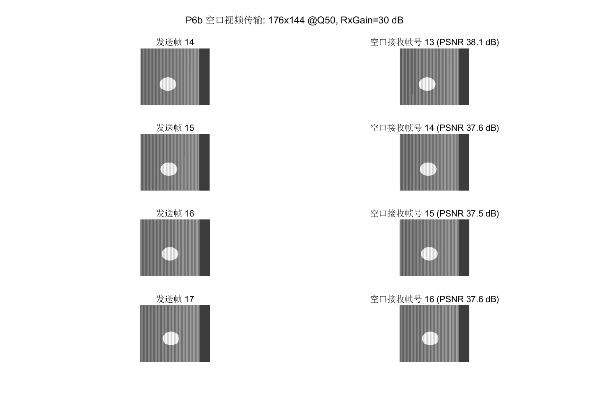
P6 空口视频还原真实空口
视频 19/20 帧还原，PSNR 36.76 dB，等效 16.3 fps；同轴短线 + RxGain 30 dB。
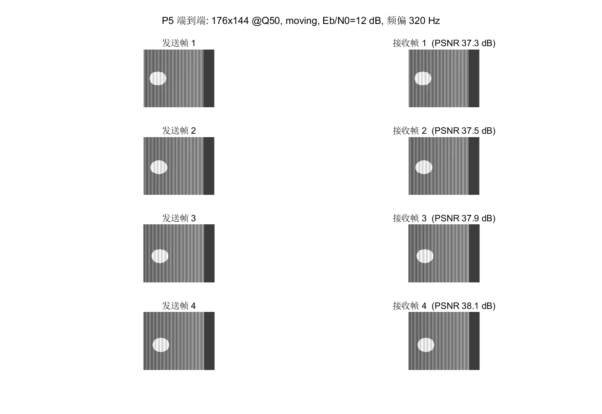
P5 端到端联调仿真
视频 over QPSK：10/10 帧还原，PSNR 37.70 dB，16.3 fps；接收侧实时率 75.6%。
02物理层与同步（W1 ~ W7）
帧结构 → 频偏估计与纠正 → 真实空口星座 → 连续接收机 → 判决导向相位跟踪。
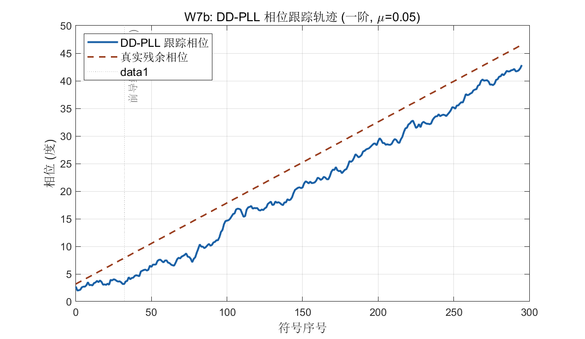
W7 DD-PLL 相位跟踪关键
真实空口的帧内相位斜坡（25.3°）被完整跟踪；加入 PLL 后 10 dB 解帧率 35% → 100%。
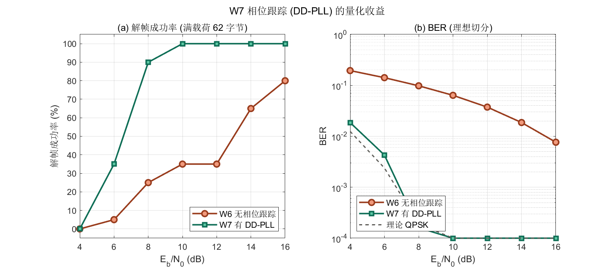
W7 有/无 PLL 对比
8 dB 处 BER 1.6e-4，与理论 QPSK 1.9e-4 高度吻合；等效增益约 6 dB。
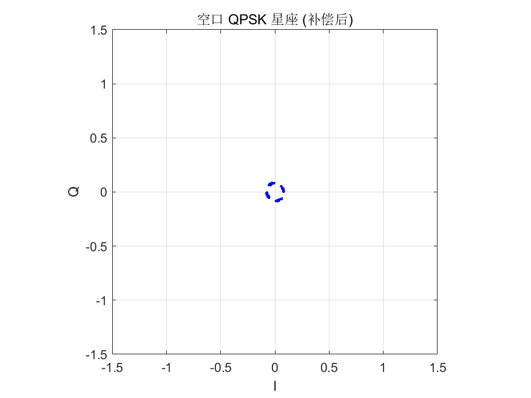
W3 真实空口星座图真机
Pluto 单音收发的 QPSK 星座，四点清晰可分。
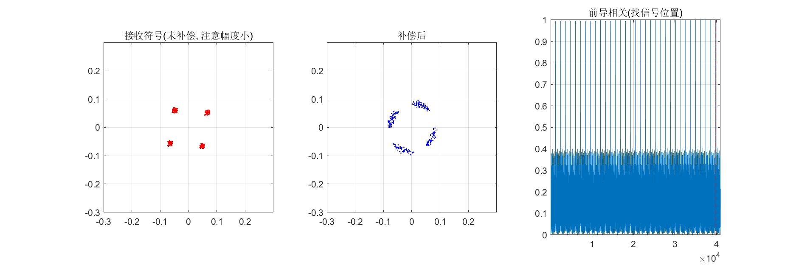
W3 诊断星座图
未做频偏纠正时的星座旋转，用于定位频偏问题。
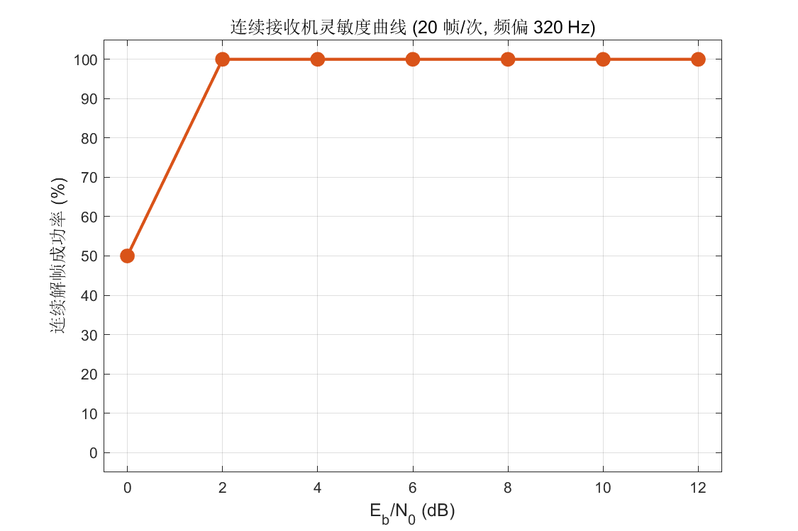
W6 接收机灵敏度
解帧率 vs Eb/N0；归一化相关门限 0.60，灵敏度约 2 dB。
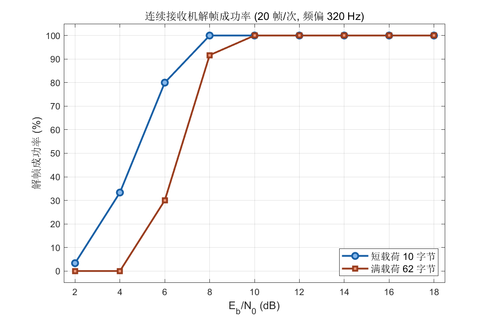
W6 帧成功率
20/20 帧解出（含 320 Hz 频偏）。
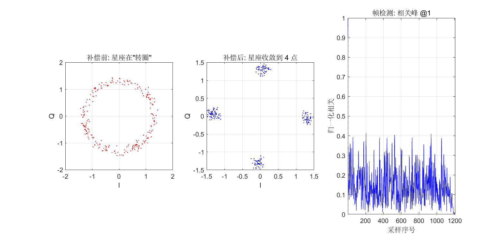
W2 频偏估计与纠正
FFT 扫频找峰 + 相位补偿，纠正前后对比。
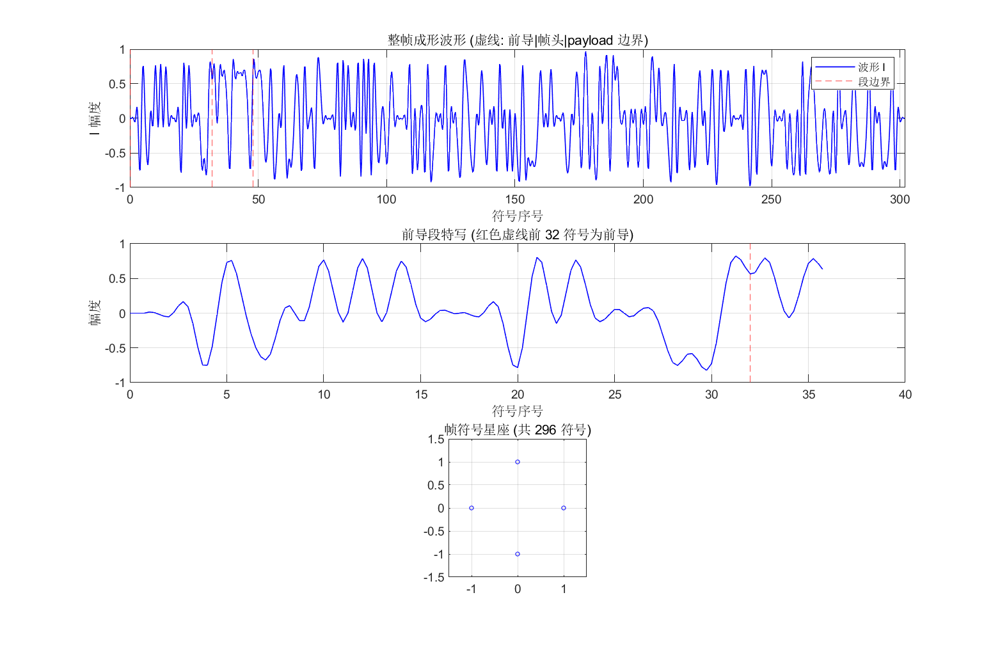
W1 帧结构与波形
前导 + 数据段，296 符号 / 1208 采样每帧。
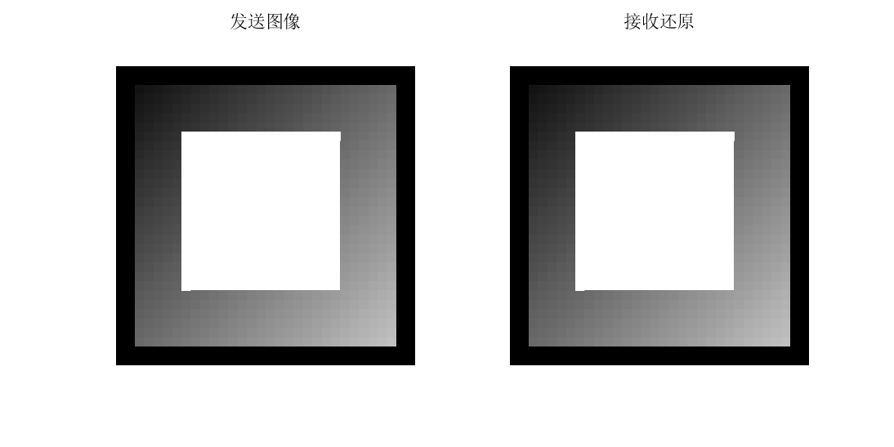
W4 图像传输
图像分块 over QPSK，3 次重复实验全 PASS。
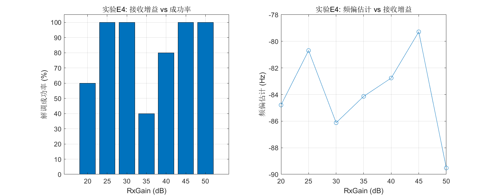
W5 链路实测
实测频偏 −82.2 ± 4.5 Hz。
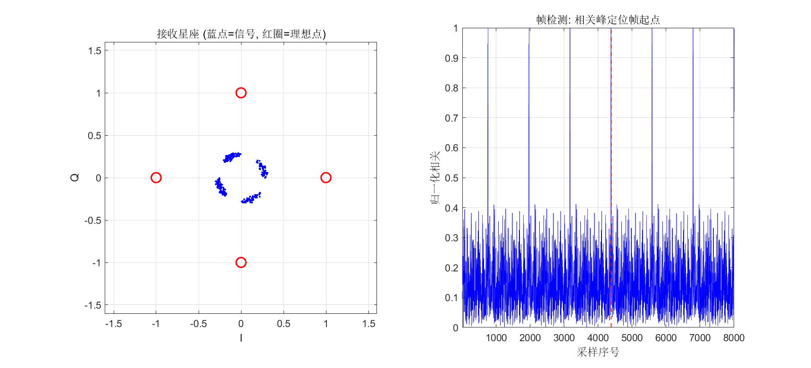
综合演示
QPSK 链路端到端结果汇总。
03公网信号接收（P1 · 保底功能）
外接天线扫频 7 个候选频点，锁定最强信号并做完整分析 —— 过程中发现并定性了 ADC 削顶问题。

WiFi ch6 @ 2437 MHz发现饱和
收到 −5.1 dBFS；IQ 散点呈"填满整格的方形" = ADC 削顶的教科书特征。
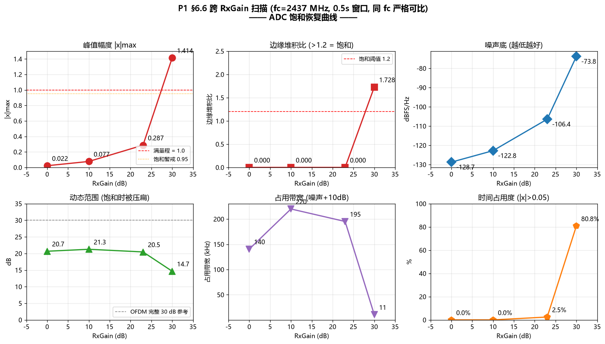
增益扫描 4 档闭环
RxGain 30/23/10/0：噪声底单调下降 54.9 dB，证明 30 dB 时约 25 dB 是削顶伪噪声；最佳工作点 10 dB。

GSM900 突发
TDMA 突发结构，占空比约 12.5%。

LTE 连续谱
OFDM 噪声状连续谱，占用度高。
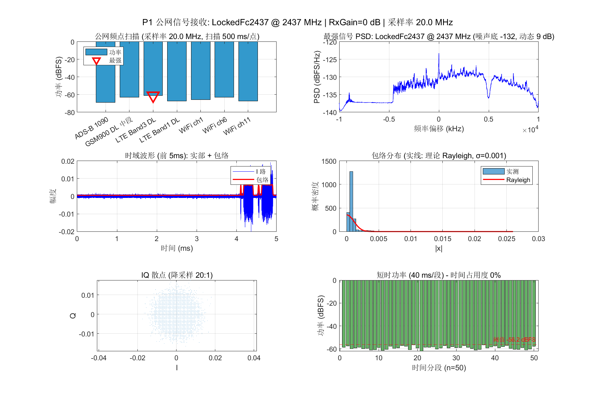
锁定频点后详细分析
锁定中心频率后的 PSD / 时域 / 包络 / 占用度全览。
04链路预算与边界分析
视频参数如何取舍？系统在多差的信噪比下会失效？
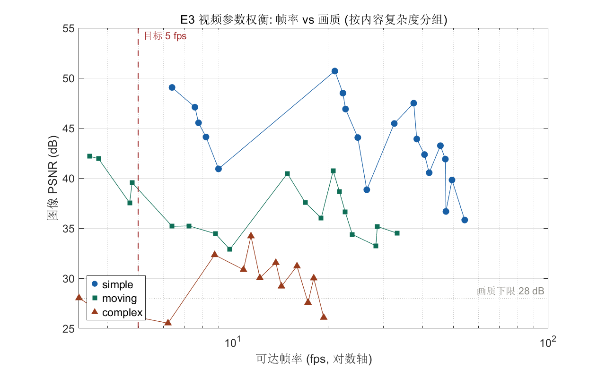
E3 视频参数权衡
分辨率/质量 vs 帧率/PSNR；发现内容复杂度是主导因素（简单/运动/复杂差 6~7 倍）。
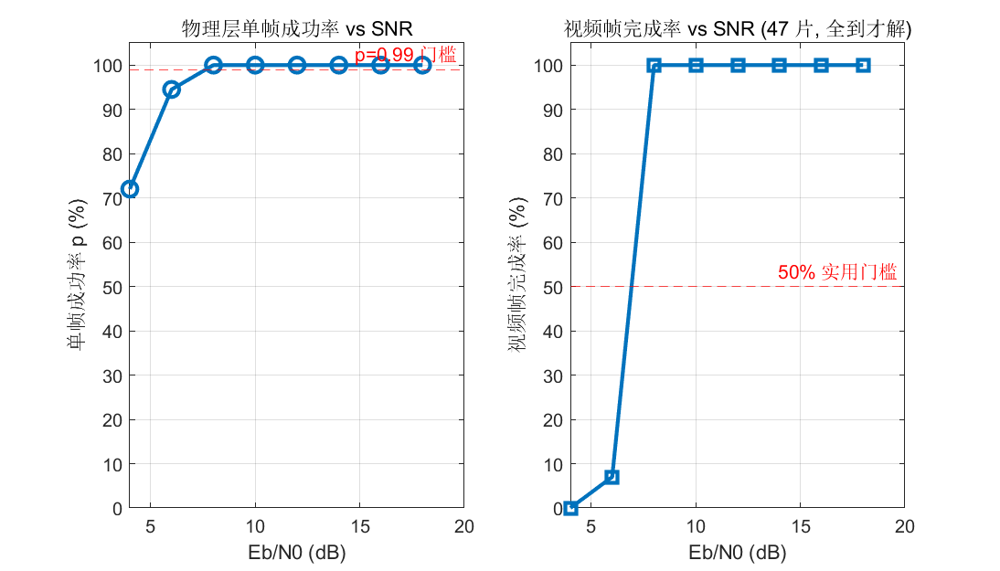
SNR × p 边界扫描悬崖效应
Eb/N0 从 8 dB 降到 6 dB 时，单帧成功率 p 从 1.0 跌到 0.945，视频帧完成率从 100% 崩到 7%。
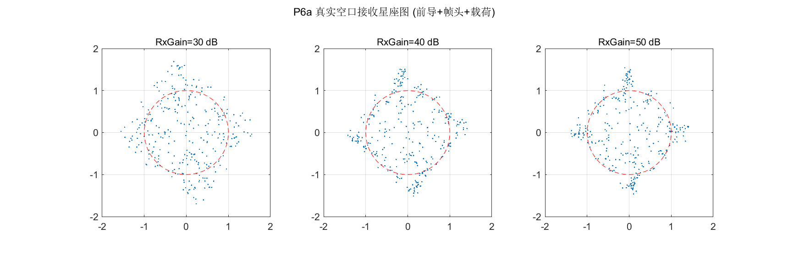
P6 接收波形与星座（诊断）
用于定位 P6b 首跑 PSNR 虚低问题（最终确认是脚本参考帧错位，非链路问题）。
05实验清单（18 / 18）
W 系列为物理层/链路基础，P 系列为课程实验 3 的实施步骤，E3 为参数权衡。
| 编号 | 实验内容 | 状态 | 关键结果 |
|---|---|---|---|
| W1 | 帧结构 + 波形生成 | 已完成 | 296 符号/帧，1208 采样/帧 |
| W2 | 频偏估计与纠正 | 已完成 | FFT 扫频找峰，残余 < 1 Hz |
| W3 | Pluto 单音 TX/RX（真实空口） | 已完成 | 星座四点清晰；还原 "HELLO QPSK!" |
| W4 | 多内容源（遥测 / 图像） | 已完成 | 图像分块传输 3 × PASS |
| W5 | 链路实测 | 已完成 | 实测频偏 −82.2 ± 4.5 Hz |
| W6 | 连续接收机（归一化相关） | 已完成 | 20/20 帧 @ 320 Hz 频偏 |
| W7 | DD-PLL 判决导向相位跟踪 | 已完成 | 8 dB BER 1.6e-4（理论 1.9e-4） |
| W7a | 定时精调（TED + 插值） | 评估后不做 | 残余定时误差 0.06T，边际收益低 |
| P0 | 环境确认（JPEG 编解码路线） | 已完成 | imwrite/imread 路线，5.3 ms/帧 |
| P1 | 公网信号接收（保底功能） | 已完成 | WiFi ch6 @2437 MHz；诊断 ADC 饱和 |
| P2 | 视频分片链路（4B 分片头） | 已完成 | 比特级完全一致；6/6 鲁棒性通过 |
| E3 | 视频参数权衡 | 已完成 | 三档模式（均衡档 176×144 @16.9 fps） |
| P3 | DD-PLL 集成进接收机 | 已完成 | 10 dB 解帧率 35% → 100% |
| P5 | 端到端联调（视频 over QPSK） | 已完成 | 视频 10/10，PSNR 37.70 dB |
| P6a | 空口链路质量评估 | 已完成 | 三个 RxGain 全部 p = 1.0000 |
| P6b | 空口视频传输 | 已完成 | 视频 19/20，PSNR 36.76 dB |
| BS | SNR × p 边界扫描 | 已完成 | 悬崖效应：p 1.0→0.945 时完成率 100%→7% |
| RS | 全链路回归测试 | 已完成 | W1/W2/W4/W6/P2/E3/P5 全 PASS |